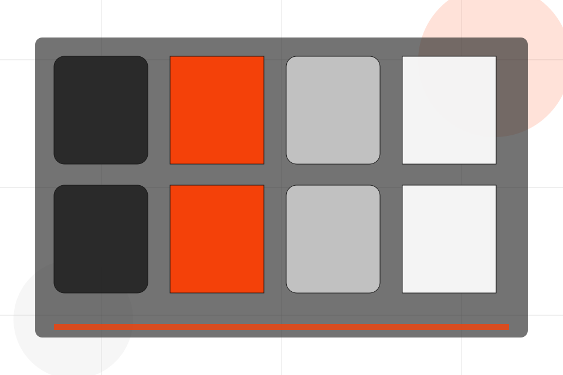
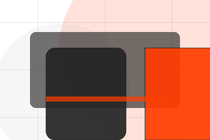

Schedule / 01
Schedule by Pulse
Schedule shaped for sports, fitness & recreation decisions.
Schedule opens as a clear sports decision hub: what Pulse offers, who it helps, why it matters, and which route to take first.
The first screen combines positioning, proof, primary action, and fast internal navigation, so people can act immediately or compare the rest of the schedule route with context.
Sports scopeCompare optionsRequest advice

Schedule / 04
Times inside schedule
Times adds professional context to the schedule route, using the athletic product-program system structure to support progress and belonging before visitors choose a next step.
Pulse uses performance program cards and focused copy to make the decision easier to scan, aligning the section with progress and belonging rather than filling space.
Explore ScheduleContext
Times gives the page a specific angle instead of repeating the navigation label.
Judgment
The performance program cards show what to compare, what to avoid, and what matters most for sports, fitness & recreation visitors.
Direction
The final cue points to a useful internal route so the section keeps the journey moving.
Schedule / 05
Send the right details
Locations makes the contact path concrete: what to send, how the response works, and what Pulse needs before visitors join a class.
The section reduces contact friction by naming the channel, expected detail, privacy path, and response expectation instead of dropping visitors into a generic form.
Explore ScheduleWhat information helps Pulse respond with a useful answer instead of a generic reply.
How the visitor should think about response, urgency, location, or availability.
The expected next message keeps scope, timing, and the first practical step clear.
Schedule / 06
Send the right details
Booking makes the contact path concrete: what to send, how the response works, and what Pulse needs before visitors join a class.
The section reduces contact friction by naming the channel, expected detail, privacy path, and response expectation instead of dropping visitors into a generic form.
Join ClassPulse keeps booking practical: send the key details, choose the right contact route, and know what kind of reply to expect.
Join ClassSchedule / 07
Reminders inside schedule
Reminders adds professional context to the schedule route, using the athletic product-program system structure to support progress and belonging before visitors choose a next step.
Pulse uses performance program cards and focused copy to make the decision easier to scan, aligning the section with progress and belonging rather than filling space.
Explore SchedulePulse structures reminders around context, judgment, and a clear next route so visitors can compare the block quickly before they join a class.
Join ClassSchedule / 08
Capacity inside schedule
Capacity adds professional context to the schedule route, using the athletic product-program system structure to support progress and belonging before visitors choose a next step.
Pulse uses performance program cards and focused copy to make the decision easier to scan, aligning the section with progress and belonging rather than filling space.
Explore ScheduleContext
Capacity gives the page a specific angle instead of repeating the navigation label.
Schedule / 09
Updates inside schedule
Updates adds professional context to the schedule route, using the athletic product-program system structure to support progress and belonging before visitors choose a next step.
Pulse uses performance program cards and focused copy to make the decision easier to scan, aligning the section with progress and belonging rather than filling space.
Explore ScheduleContext
Updates gives the page a specific angle instead of repeating the navigation label.
Judgment
The performance program cards show what to compare, what to avoid, and what matters most for sports, fitness & recreation visitors.

Direction
The final cue points to a useful internal route so the section keeps the journey moving.
Important notes before you act
Fitness guidance should be adapted to health status and professional advice where needed.